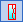
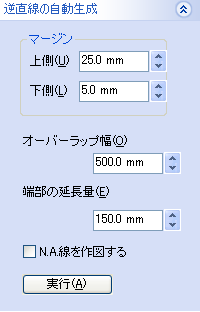
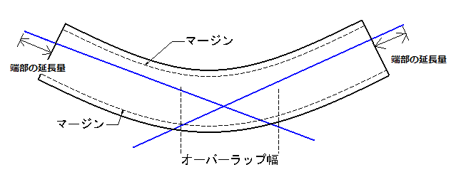

 逆直線展開設定
- 条材に逆直線展開する直線を設定します。
- 条材に逆直線展開の各種パラメータを設定します。
- 逆直線スケッチをスケッチとして自動生成します。
操作方法(設定)


条材のWeb面にスケッチを作成し、逆直線展開する直線を作成しておきます。
条材,スケッチを選択してOKで設定します。
条材を選択した際に既にスケッチが設定されている場合はそのスケッチが選択状態になります。(別のスケッチを選択することも可能です。)
操作方法(逆直線展開パラメータの設定、自動生成)
 
設定する条材を選択して、各種パラメータを設定します。
OKボタンでパラメータを選択部材に設定します。また、「実行」ボタンで逆直線をスケッチとして作成することもできます。 作成されたスケッチは逆直線定義スケッチとして選択されます。
直線は可能な限り少ない本数で作成されます。

- マージン
逆直線を作成する領域のWeb面の上下端から余白を設定します。
- オーバーラップ幅
複数の直線を生成する際の、直線が重複する領域の最小幅を設定します。
- 端部の延長量
逆直線の条材端部からの飛び出し長さを設定します。
- N.A.線を作図する
逆直線をスケッチとして作成する際にN.A.線も作図するかどうかを指定できます。
- N.A.位置設定
条材の正曲げ、逆曲げ、の部位それぞれのN.A.位置を係数をかけることで調整することができます。

- N.A.位置補正係数
N.A.位置のボトム位置からの高さにこの係数をかけた位置をN.A.線とします。
1.0では補正なし、0.9では元の位置の９０％の位置となります。
- 逆直線展開補正係数
展開された逆直線の位置のボトム位置からの高さにこの係数をかけて逆直線の位置を補正することができます。

- N.A.位置補正係数